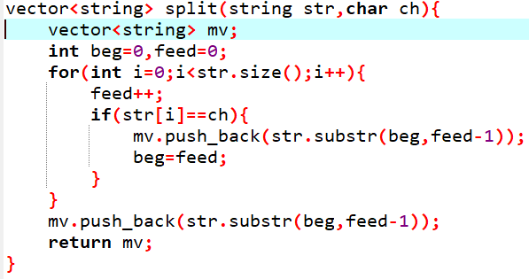
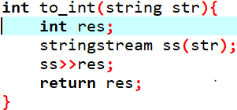
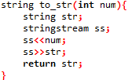
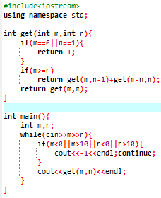

c++进阶
1.获取输入
1.1获取最后一个输入
while(cin>>a);测试输入流是否正常，如果输入流正常，就会继续循环获取键盘值，如果输入流错误，或者达到文件末尾（在windows下Ctrl+Z，在Linux下Ctrl+D），该循环就会终止。
1.2读取最后一行字符
2.格式转换
2.1大小写转换
tolower(char a);
toupper(char a);
2.2 char转int
char-'0'
2.3 进制转换
16进制转10进制:
cin > > hex > > a;
cout << a;
3.字符串处理
3.1字符串截取
str.substr(2,3);//从str[2](包括str[2])开始，截取3个字符
splite示例:

3.2大小比较
str1 >(<)str2按照字典序比较大(小)
sort(str.begin(),str.end(),cmp);也可以对str内的字符按照ASCII排序
3.3 string与int互转
string转int:

int转string:

3.4 find函数
string.find(string str);返回值为第一个子串的位置，如果未找到，则返回string.npos
4.STL
4.1 map
map < int,int > 中的value默认值=0；
4.2 sort
数组a[n]:sort(a,a+n,comp)
vector< int > a:sort(a.begin(),b.end(),comp)
5. about溢出
5.1 int变long long
int的最大值为2147483647(共十位,0x7fffffff)，可变为#define ll long long(最后不能加分号)
6.经典算法
6.1 递归案例
Q:把M个同样的苹果放在N个同样的盘子里，允许有的盘子空着不放，问共有多少种不同的分法？（用K表示）5，1，1和1，5，1 是同一种分法.
A:将M个苹果放在N个同样的盘子里，可以分为两种情况
1.至少有一个盘子中为空。2.所有盘子都不为空
递归表达式为f(m,n)=f(m,n-1)+f(m-n,n);当遇到M< N的情况时可以看成将M个苹果放入M个盘子中，剩余的N-M个盘子为空。
C:
附录
ASCII表